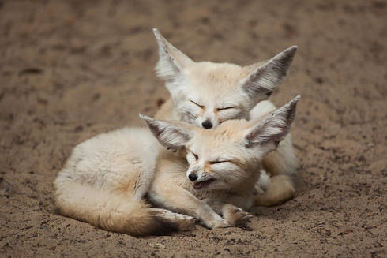
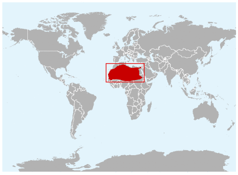
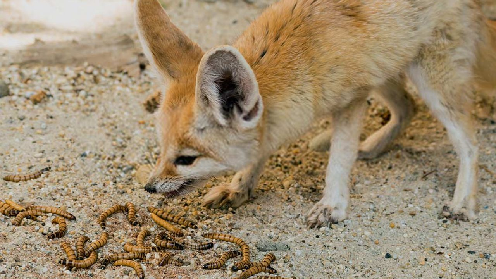
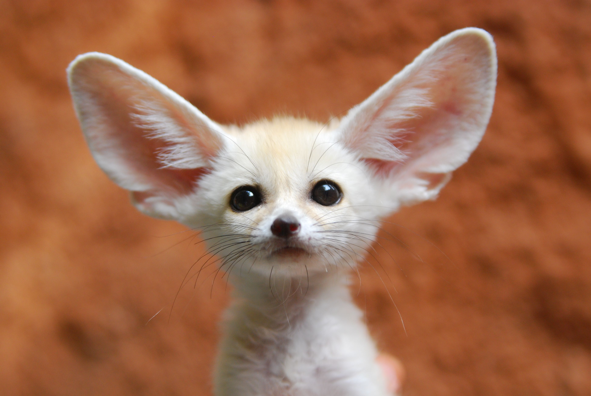

Description of the Fennec Fox
Appearance
 The fennec fox (Vulpes zerda) is a small crepuscular fox.
The fennec fox (Vulpes zerda) is a small crepuscular fox.
The fur of the fennec fox is straw-coloured. Its nose is black. Its tapering tail has a black tip. Its long ears have longitudinal reddish stripes on the back and are so densely haired inside that the external auditory meatus is not visible. The edges of the ears are whitish, but darker on the back. The ear to body ratio is greatest in the canid family and likely help in dissipating heat and locating vertebrates.
The fennec fox is the smallest canid. Females range in head-to-body size from 34.5 to 39.5 cm (13.6 to 15.6 in) with a 23–25 cm (9.1–9.8 in) long tail and 9–9.5 cm (3.5–3.7 in) long ears, and weigh 1–1.9 kg (2.2–4.2 lb). Males are slightly larger, ranging in head-to-body size from 39 to 39.5 cm (15.4 to 15.6 in) with a 23–25 cm (9.1–9.8 in) long tail and 10 cm (3.9 in) long ears, weighing at least 1.3 kg (2.9 lb).
Habitat
The fennec fox is distributed in the Sahara, from Morocco and Mauritania to northern Niger, through Egypt and the Sinai Peninsula. It inhabits small sand dunes and vast treeless sand areas with sparse vegetation such as grasses, sedges and small shrubs.
Behaviour
A fennec fox digs its den in sand, either in open areas or places sheltered by plants with stable sand dunes. In compacted soils, dens are up to 120 m2 (1,300 sq ft) large, with up to 15 different entrances. In some cases, different families interconnect their dens, or locate them close together. In soft, looser sand, dens tend to be simpler with only one entrance leading to a single chamber.
 Captive fennec foxes reach sexual maturity at around nine months and mate between January and April. They usually breed only once per year. Females give birth between March and June to a litter of one to four pups that open their eyes after 8 to 11 days. Both female and male care for the pups. They communicate by barking, purring, yapping and squeaking. Pups remain in the family even after a new litter is born.